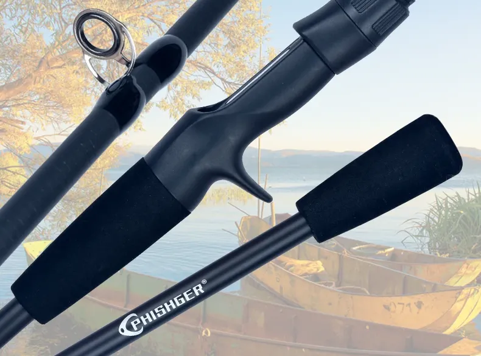
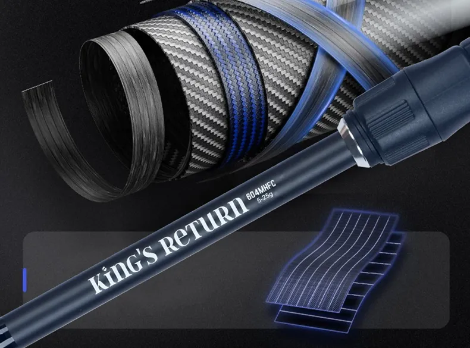

La caña Phishger King's Return es una caña de viaje diseñada para pescadores que buscan movilidad sin renunciar al rendimiento. Forma parte de nuestra selección de componentes de pesca pensados para spinning y técnicas ligeras.
Gracias a su construcción multisección y su alta sensibilidad, combina muy bien con sedales trenzados como el Sougayilang de 9 hebras o el más avanzado ZUKIBO Sembo de 13 hebras .
La Phishger King's Return es una caña perfecta para pescadores viajeros o sesiones rápidas. Montada con un carrete Sougayilang y un sedal trenzado fino, ofrece un conjunto equilibrado, ligero y fiable.
Valoración: ★★★★☆ (4,4/5)
Esta caña destaca especialmente en spinning ligero y pesca ocasional desde costa o roca. Su combinación con sedales trenzados finos permite maximizar la sensibilidad y el control del señuelo.